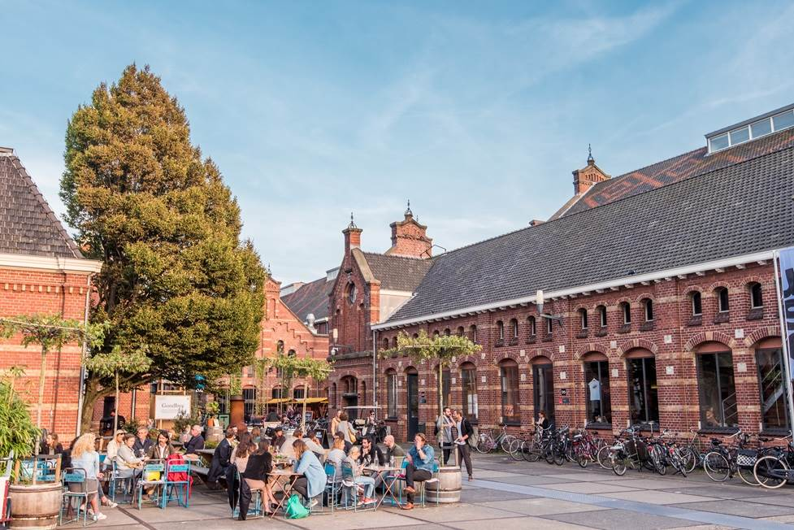
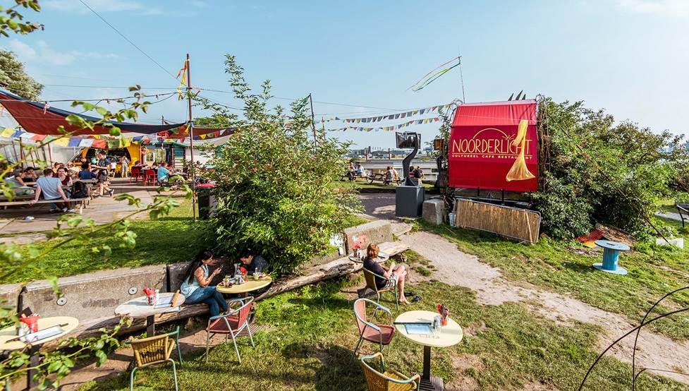
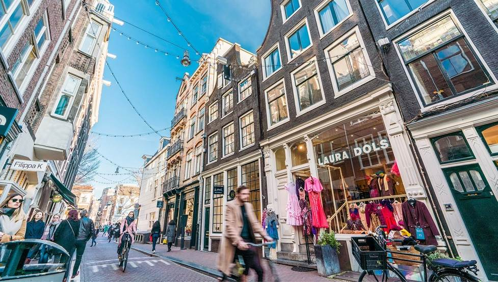

There are endless things to do in Amsterdam in any weather and many of the most rewarding experiences lie beyond the well-trodden tourist paths of the city centre. To lead you through the wealth of wonders, we’ve whittled down the selection to this essential guide.
Many of the museums and sights included are covered by the I amsterdam City Card - a handy visitor pass which gets you free entry to Amsterdam’s most popular attractions, plus free public transport for the duration of your stay.
Get lost in the arty Jordaan
Often cited as Amsterdam’s most charming neighbourhood, wandering into the Jordaan feels like stepping back in time. Originally a working-class area, the Jordaan’s narrow streets and quaint buildings now make up one of Amsterdam’s most desirable
quarters, dotted with independent art galleries, antique shops, courtyard gardens and atmospheric bars and restaurants. Ditch the map and lose yourself in the labyrinth of narrow lanes that sprawl eastwards from Prinsengracht canal known as the
9 Streets, one of Amsterdam's most rewarding shopping experiences.
Cycle to hidden gems
There are over 800,000 bicycles in Amsterdam. That’s more bikes than people! Cycling in Amsterdam is a way of life, made easier by the city’s unbeatable network of cycle routes and flat landscape. Amsterdam regularly comes out on
top in lists of the world’s most cycle-friendly cities, and there’s no finer way to explore the region’s attractions than by pedal power. Hop on your bike and head to Sloterplas for a dip in the sprawling lake, or cycle over to
Ouderkerk aan de Amstel to explore a 12th-century village idyll packed with historic sights. Many of Amsterdam’s best-kept secrets can be discovered from the comfort of your saddle.
Try herring from a herring cart

Raw herring may sound a little scary to the uninitiated, but every visitor to Amsterdam should give it a go. You’ll spot haringhandels (herring carts) serving up this Dutch specialty all over the city - ask for a ‘broodje haring’ to get the fish served
in a small sandwich with pickles and onions. The best time to try raw herring is between May and July when the herring is said to be at its sweetest. Still hungry? See if you can taste your way through all of these traditional Dutch snacks
during your visit.
See windmills, countryside and beaches
If you’re in town for more than a few days, then plan a day trip to explore the diverse attractions of the surrounding area. Just a short hop from Amsterdam lies a rich landscape of gorgeous countryside, beaches, windmills and historic
towns – all easily reachable from the city centre. Just 20 minutes from Amsterdam Central by train, the picturesque city of plan a day tripHaarlem overflows with history and culture, plus a great selection of shops, cafes and restaurants.
And if lying on a beach is more your thing, then the beautiful golden stretches at Bloemendaal aan Zee and Zandvoort aan Zee will be happy to oblige with golden sands, dunes and plenty of watersports. Looking for picture-perfect views of
windmills, rolling grassland and winding canals? Set your sights on the Zaanse Schans, a pastoral paradise that’s so photogenic it is basically why Instagram was invented.
Immerse yourself in culture at Westergas

Located at Westerpark, this sprawling complex of former industrial buildings used to be the city’s municipal gasworks. Now transformed into a colourful cultural hub, Westergas is home to a variety of tempting bars,
restaurants, coffee roasters, a microbrewery, art-house cinema, and a whole host of creative businesses. Look out for regular food markets, mini-festivals and events held here, such as the vibrant Sunday market held on the first Sunday of every month.
Check out the museums & majestic buildings in Museumplein
Home to the Rijksmuseum, the Van Gogh Museum, the Stedelijk Museum and The Royal Concertgebouw, Museumplein is the cultural beating heart of Amsterdam. Recently renovated to a world-class
standard, the leafy and architecturally astounding 19th-century district of Oud-Zuid is an art lover’s utopia. The open square between the buildings pulses with activity all day, with open-air exhibitions, markets and a large paddling pool to dip your
toes into on warmer days. In the winter months, the square transforms with a vast outdoor ice rink. Get free entry to the museums with the I amsterdam City Card.
Cruise past canal houses and bridges
Created in the 17th century to keep the sea at bay, Amsterdam’s UNESCO protected canal belt is the quintessential postcard-perfect vision of Amsterdam. It is an unbelievably pretty sight, especially after sundown when the bridges are lit up by fairy
lights and the whole area takes on a magical feel. Floating along the canals by guided boat tour is a great way to get under the fabric of the city, and you’ll learn lots of fascinating facts along the way – such as why the tilting homes along the
canals are known as ‘dancing houses’. There are many different canal cruises on offer, from hop-on-hop-off sightseeing tours to atmospheric candlelit night time cruises with food and wine. Get a free canal cruise with the
I amsterdam City Card, or book a canal cruise online with the Canal Cruise Ticket.
Try local beer at a historic brewery
There are eight remaining windmills in Amsterdam and the easiest to visit is De Gooyer in the Oostelijke Eilanden (Eastern Islands) neighbourhood. And this isn’t just any windmill – for under the sails of this striking
landmark is Brouwerij ‘t IJ, an award-winning artisan microbrewery with a large outdoor drinking terrace and 30-minute guided tasting tours. The brewery produces a range of organic standard and seasonal ales that you'll find in many
Amsterdam bars, though nothing tastes quite as good as beer brewed on the premises. Just try to pace yourself because the city is brimming with craft beer bars and microbreweries that will beckon you in for one more frothy fluitje.
Catch the free ferry to Amsterdam Noord’s renovated shipyard

Many visitors to Amsterdam never manage to venture north of Amsterdam Central Station, which is a shame, considering the vibrant food, drink and cultural scene that’s burgeoned across the water. A short (free) ferry trip will take you
to several drop off points, including cultural hotspot NDSM, where you can enjoy a host of hip waterside hangouts, frequent festivals and events.
Go to a concert at a world-famous venue
Whether you like listening to live music in a majestic concert hall or an intimate dive bar, Amsterdam has you covered in high style. Housed in a converted church, Paradiso has hosted iconic acts like The Rolling Stones
and The Sex Pistols and continues to showcase a superb roster of international talent. An impressive grand dame, Concertgebouw is lauded for its excellent acoustics and lineup of world-class orchestras alongside a wide variety of
popular musicians. Over at the Roode Bioscoop—a 100-year-old former cinema— the cosy space allows the audience to really connect with the acoustic artists. De School’s basement nightclub, located in the school's former
bike storage, draws a young crowd of music aficionados thanks to its eclectic programme of live music and 24-hour license.
Indulge in waterfront music, art and food in an up-and-coming neighbourhood
Once a base for a munitions factory, Zaandam's Hembrugterrein is quickly transforming into a haven for Amsterdam’s creative set with several restaurants, museums and artistic venues all set on a plum spot lining the shores of the North
Sea Canal. Thursday to Sunday, a direct ferry runs from Central Station to Het HEM, the cultural complex that’s at the heart of this thrumming new neighbourhood. Het HEM has a variety of exhibition spaces where the work of talented
local artists is on proud display, along with a living room with a library, a café with a reading table and lakeside terrace, a hi-fi record bar and Restaurant Europa, serving up North Sea delights.
Drink in a bird's-eye view of Amsterdam from a rooftop bar
Toast to Amsterdam’s impressive architecture and stunning skyline with cocktails at one of the city’s stylish rooftop bars. The panorama vista will be as dizzying as the drinks at Juniper & Kin Cocktail Bar (juniperandkin.nl),
located on the 21st floor of QO hotel. Looking for an even more immersive experience? Soak in the sprawling vista while you take a dip in one of the alfresco jacuzzis at Canvas, Volkshotel’s terrace bar that’s known for its
affordable drinks and priceless view of Amsterdam. Or swing on over to A’DAM Tower for icy sundowners at Panorama Restaurant Madam. You’ll feel like you are on top of the world.
Live like Dutch royalty

There are many castles, palaces and fortresses in the Amsterdam Area that provide a window into the region’s regal past and will make you feel like the star of your own fairytale. The Royal Palace Amsterdam is King
Willem-Alexander’s official reception palace where world leaders and heads of state are hosted and entertained, but it is also open to visitors much of the year. Just 15 kilometres southeast of the city, you’ll find Muiderslot—a
13th-century castle that looks like it could have been plucked from a Disney movie with its five towers, moat and drawbridge. Over in Utrecht, the 14th-century De Haar Castle was updated with impressive turrets and towers in the 19th
century courtesy of Pierre Cuypers, the famous Rijksmuseum architect.
Search for unusual finds at Europe's biggest flea market
If you love bargain-hunting, quirky curiosities and sprawling industrial warehouses, make time for a visit to IJ-hallen, one of the best markets on the continent. Take the ferry from the harbour behind Central Station to the
NDSM-yard and from there it's just a 5-minute walk to the market. Step into the cavernous space, or browse the many stands that spill out onto the wharf, to rifle through a wild collection of records, vintage clothing, home
furnishings and antiques. If you can’t find something special here, you aren’t looking hard enough.
See how Anne Frank lived
Reflect on the atrocities committed against the Jewish people during World War II at the Prinsengracht house where diarist Anne Frank and her family hid from the Nazis for two years after fleeing persecution in Germany. The front of the
Anne Frank House is now a thought-provoking museum but the back annexe has been preserved to give an idea of what life was like for Anne and the families she hid with. Waiting times are often lengthy, so visit early in the
morning or book online in advance to beat the queues.
Eat pancakes & feed goats in the Central Park of Amsterdam

Amsterdamse Bos, on the southern edge of the city, is almost three times the size of New York’s Central Park. This lush urban oasis provides ample opportunities for bike rides, picnics, swimming, strolling over hills and
flower-blanketed valleys, or just barbecuing with friends. In the forest, you’ll find Goat Farm Ridammerhoeve, where you can meet goats, lambs, chickens, pigs, cows and horses and then fuel up at its charming restaurant
that serves delicious goat cheese. For heartier fare, head to Meerzicht Farm and Pancake House where the Dutch-style pancakes are beyond delicious. It also has a big playground for the kids and a stable of daintily antlered deer sure to
elicit ooohs and ahhhs from your own dears.
Experience culture, film and architecture across the IJ
Dominating the view from the southern banks of the IJ behind Central Station, the striking white EYE building has rapidly become one of Amsterdam’s most iconic landmarks since it opened in Spring 2012. An absolute must for film fans, the
EYE Filmmuseum houses a permanent exhibition space that showcases retrospectives and contemporary exhibits, as well as a vast film library, cinema and fabulous restaurant bar with a terrace overlooking the water.
Catch the free ’Buiksloterweg’ ferry from behind Central Station, which takes three minutes. Get free entry to the EYE filmmuseum with the I amsterdam City Card.
Discover Amsterdam's independent shopping streets

While many visitors head straight to the busy chain-store mecca of Kalverstraat, those in the know get their retail therapy at one of the city's more locally flavoured shopping meccas. The most well-known of these is
De Negen Straatjes or ‘The Nine Streets’ at a quaint warren of cobbled streets that connect the main canals between Leidsegracht and Raadhuisstraat. Here you’ll find over 200 retailers, including a fine selection of
independent boutiques, vintage shops and specialty stores selling everything from designer dresses to handmade cosmetics. If you’re looking for souvenirs to take home, skip the tourist traps and shop for authentic Dutch design and
quality Amsterdam brands at the Local Goods Store in De Hallen or the I amsterdam Store in Central Station.
Eat your way around food stalls in a former tram depot
Located in the hip Oud-West neighbourhood, De Hallen is a hotspot for arts, crafts, fashion and food in a recently refurbished industrial building dating from 1902. De Hallen houses a cinema, independent
stores and a boutique hotel, as well as the impressive Food Hallen where visitors can munch their way through a selection of upmarket street fare from one of many vendors located around a central bar. Every other weekend,
a fortnightly local-goods market sets up stall in the building’s central passageway.
Wake up and smell the tulips
Yes, they’re as clichéd as clogs, but tulips are a definitive symbol of Dutch culture, and a trip to the Netherlands wouldn’t be complete without feasting your eyes on these beautiful blooms. If you’re visiting Amsterdam in spring, then take the short 20-minute trip out to the world-famous tulip fields (Bollenstreek) – stretching out in colourful stripes across miles of lowland fields between Haarlem and Leiden. There are also ample opportunities to stop and smell the tulips right in the heart of the city; the bulbs spill out of bouquets at the Bloemenmarkt, line the windows of the Tulip Museum and seem to burst forth from every possible planter during the Tulip Festival, which lasts all of April.
Explore Amsterdam